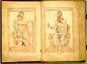

Gesta Theodorici; Flavius Magnus Aurelius Cassiodorus, Variae; en andere teksten. Latijn. Handschrift op perkament, 186 ff., 220 x 125 mm. Fulda, vóór 1176. -- (VUL 46)
Twee tegenover elkaar geplaatste, bladgrote portretten vormen het begin van dit handschrift, links dat van Theodorik de Grote (455-526), koning van de Oostgoten en bewonderaar van de Romeinse cultuur, rechts dat van Flavius Magnus Aurelius Cassiodorus (circa 485 - circa 580), vooral bekend als verdediger en behoeder van de Grieks-Romeinse cultuur en grondlegger van de Westerse monastieke traditie, maar in zijn jonge jaren hoofd van de kanselarij van Theodorik. De betrokkenheid ten opzichte van de inhoud is duidelijk. De Gesta Theodorici geven een levensbeschrijving van Theodorik; daarop volgen de regeringsbesluiten die Cassiodorus opstelde en in 538 publiceerde.
Beiden zitten op een klassieke zetel. Cassiodorus maakt een spreekgebaar. De strekking wordt verduidelijkt door de twee citaten, beide ontleend aan het vijfde hoofdstuk van het eerste boek van de Variae. Cassiodorus zegt, getuige de inscriptie: ‘Cogi debet, ut sit quietus, qui suo vitio renuit esse pacificus’ (Je moet iemand dwingen zich rustig te houden, die door eigen schuld weigert vredelievend te zijn.) Theodorik antwoordt daarop: ‘Sic est. Nam et medendi peritus invitum frequenter salvat egrotum’ (Ja, want ook een medicus maakt een zieke tegen diens wil toch vaak beter.) En daarmee is een sleutelprobleem van de bestuurskunst gegeven.
De portretten, twee pentekeningen in bruin en rood, hier en daar even met geel gewassen, zijn van een superieure kwaliteit, zowel door de houding van beide figuren en de plooival van hun kleding, als door het bekwaam hanteren van de pen.
Literatuur
- K. Weitzmann, ‘Zwei Fuldaer Handschriften des 12. Jahrhunderts’, in: Marburger Jahrbuch für Kunstwissenschaft, 8/9 (1936), p. 172-181.
- G.I. Lieftinck, Manuscrits datés conservés dans les Pays-Bas. T. 1. Amsterdam 1964, nr. 242.
| vorige pagina | top pagina |